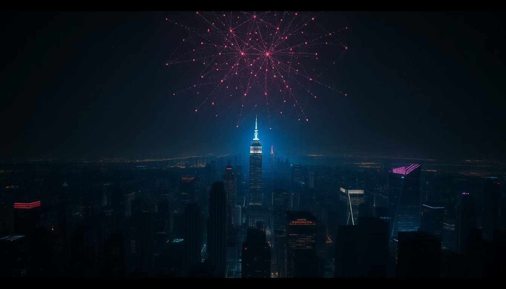

ИИ в работе
министерства
на ваших документах и задачах.
Три правила этих двух часов
Одна линия: от картины мира до вашего первого шага
Картина мира
Пять уровней работы с ИИ, три мира нейросетей и правила безопасности
Руки
Промпт-инженерия: работают все, на своих телефонах, на своих задачах
Показ
Ассистенты, проекты, навыки и агенты: со своего экрана, вживую
Наш продукт
Куда всё это едет и каким может быть первый шаг министерства
Какая задача съедает больше всего времени
у вас или у ваших людей?
Пять уровней работы с ИИ
Умный поисковик
Просто инструмент умеет сильно больше.
Рабочий инструмент каждый день
Второй пилот
Дали регламент: получили таблицу соответствия.
Свои инструменты
Агенты: рутина едет сама

Три мира нейросетей
Запад
ChatGPT · главный Gemini · Google Claude · тексты Эталон качества, но из России без плясок не открываются
Китай
QQwen · сегодня главный DeepSeek · бесплатный GGLM · догоняет лидеров Открываются напрямую, бесплатные, догнали лидеров
Россия
GGigaChat · Сбер ЯАлиса · Яндекс Отстают на шаг, но данные остаются в российском контуре
Окно чата: всё, что нужно знать про интерфейс
Направляем уточнённую форму и сообщаем о переносе срока на 25 августа. Ранее направленные материалы...
лежат отдельными чатами
если данных мало
и живой разговор
Открываете любую: одно и то же окно
Научились разговаривать с одной нейросетью: умеете со всеми.

Мы сейчас говорим про вас лично
или про команду и министерство?
Пользоваться можно
Закупки здесь ни при чём
Светофор данных
Открытая
Можно всё и в любой сервис.
Ориентир: завтра появится в газете, и ничего не случится
Персональные
В зарубежные сервисы нельзя.
Лечится обезличиванием: «заявитель» вместо фамилии, и текст стал зелёным
Служебная
Пометка ДСП, проекты до подписания, внутренняя аналитика.
Только свой защищённый контур
Гостайна
Никогда и никуда.
Обсуждению не подлежит
Открытая информация
Персональные данные
Служебная информация: «для служебного пользования»
Государственная тайна
Дело не в том, российский сервис или иностранный.
Дело в том, публичное это облако
или ваш контур.
Просто сервер стоит в другой стране. Для служебной информации нужен свой контур.
Три шага, именно в этом порядке
Обучение
Сотрудник, который знает светофор, безопаснее сотрудника, которому просто запретили.
Срок: недели
Регламент на две страницы
Какие сервисы, какие данные, кто отвечает за проверку результата.
Срок: дни
Свой контур
Модели на своих серверах: данные не покидают организацию.
Срок: месяцы, когда первые два шага дали результат
Это не список запретов.
Это карта, где можно.
Обезличили: и жёлтая стала зелёной. Всё, дальше руками.
Чтобы оставаться на месте, нужно бежать.
Чтобы двигаться вперёд: вдвое быстрее.
Татарстан: ГосПромпт
Людям дали готовые сценарии, а не пустой чат.
Промпт: инструкция для нейросети
Промпт: единственный способ вытащить из этого чёрного ящика ответ под вашу задачу.
Заходим в Qwen: одна минута
Сначала нейросеть узнаёт, с кем говорит
О себе
Должность и чем занимаетесь, две фразы. Руководителю и специалисту нужны разные ответы
Как отвечать
Коротко, по делу, официально-деловой стиль там, где нужно
Планка качества
Кастомная инструкция, которая заставляет дорабатывать ответ до высокой планки
Научите нейросеть себе за три шага
Где ИИ именно в вашей работе
Пусть нейросеть сама вытащит из вас задачи и покажет, где она вас усилит.
Не знаете, что вам нужно:
запустите мастер-промпт.
В раздатке их семь, все помечены красным: карта применения, ваш ассистент, ваше приложение и другие.
РКЗФО: пять частей сильного запроса
Как пишут все и как напишете вы
Как пишут все
«Напиши ответ на обращение гражданина про плохой интернет»
На выходе: вода из интернета, которую нельзя отправить
По формуле
Роль, живой контекст, задача, формат и ограничения: тот запрос с прошлого слайда
На выходе: документ, который почти готов к отправке
Ваша задача по формуле
Ты [роль: юрист, аналитик, специалист по обращениям]. Контекст: [что за ситуация, кому уйдёт результат, сроки]. Задача: [что сделать, одним глаголом]. Формат: [таблица, письмо, пять пунктов]. Ограничения: [без канцелярита, не длиннее страницы].
Или откройте раздатку: там 20 готовых промптов под задачи министерства, найдите свой и подставьте своё.
«Сначала задай мне вопросы»
Одна строка в конце запроса меняет качество ответа радикально.
Не отвечай сразу. Сначала задай мне вопросы, которые помогут решить задачу максимально точно. Начинай отвечать по сути, только когда получишь ответы.
Обратный промптинг: заберите стиль
она сама вытащит из него правила и соберёт рабочий промпт.
Вот ответ, который у нас считается образцовым: [текст]. Разбери, чем он хорош: структура, тон, длина фраз. Собери правила стиля и напиши промпт, который будет готовить новые ответы в этой же манере.
Говорите, а не печатайте
Наговорите свою задачу голосом
Упакуй мою мысль в промпт по формуле РКЗФО: роль, контекст, задача, формат, ограничения. Покажи получившийся промпт и выполни его.Совет экспертов: один запрос, четыре взгляда
Прагматик
что реально сделать на этой неделе
Стратег
мыслит годами, а не днями
Скептик
его задача найти дыры в рассуждениях
Профильный
юрист, финансист или кадровик: под тему
Ход 1: совет собирается и спорит
Ход 2: роль, которой не хватало
сотрудник, которому это делать руками. Часто именно эта роль ломает всю логику.
Ход 3: адвокат дьявола закрывает
У каждой задачи свой кабинет
Промпт живёт одну сессию.
Ассистент это промпт, который живёт постоянно
и знает вашу специфику.
Ассистент «Разбор входящего»
Ассистент «Ответ гражданину»
Ассистент создаётся разговором
Промпт, ассистент, навык
Промпт
Запрос, который живёт одну сессию. Написали, получили, забыли
Ассистент
Роль, которая живёт постоянно и знает вашу специфику
Навык
Умение, которое можно дать любой роли. Подключается под задачу
Библиотека: 12 готовых навыков в раздатке
Рабочее приложение: одним запросом, без программистов
Не «когда-нибудь у программистов», а вечер вашего времени.
Ассистент отвечает.
Агент делает.
Агент берёт задачу из вашей карты болей
Вариант: совещание
Записываем две минуты живого разговора прямо здесь. На выходе: протокол с поручениями, сроками и ответственными
Вариант: поток обращений
Пачка обращений: классификация, сводка горячих тем, проекты ответов и мини-дашборд
Я не считаю, что искусственный интеллект заменит людей.
Он поможет им стать более эффективными
в своей работе.
закрывает работу троих.
К агенту подключаются рабочие сервисы
Гермес: цифровой сотрудник в телефоне
Ресёрч сделает любой чат.
А это цифровой сотрудник:
ему поручаешь, он делает.
третий следит за сроками. Снаружи: просто поручение голосом.

Это западные инструменты в западной обвязке.
Мы строим то же самое,
только под российский рынок.
Цифровой офис: рабочее место с агентами
Где министерство сейчас и куда идём
Возглавьте работу с ИИ:
каждый у себя в направлении.
Инструменты у вас теперь есть: бесплатные, открытые, с раздаткой в руках.
За два часа можно увидеть и понять.
Научиться нельзя.
Навык появляется там, где есть повторение на своих задачах.
Следующий шаг
Практикум по агентам
Для тех, кто уже работает с ИИ: настраиваем агента под живую задачу министерства.
День выбираем сегодня
Занятие для команды
Промпт-инженерия для сотрудников: руки, как сегодня, на их задачах
Карта первых шагов
Соберу короткую карту для министерства: что делать в какой последовательности.
Без бумаг и бюджета

Что берём в работу?
20 промптов под задачи министерства и карточка входа в Qwen.


@neovidaAi